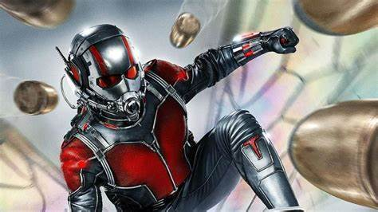
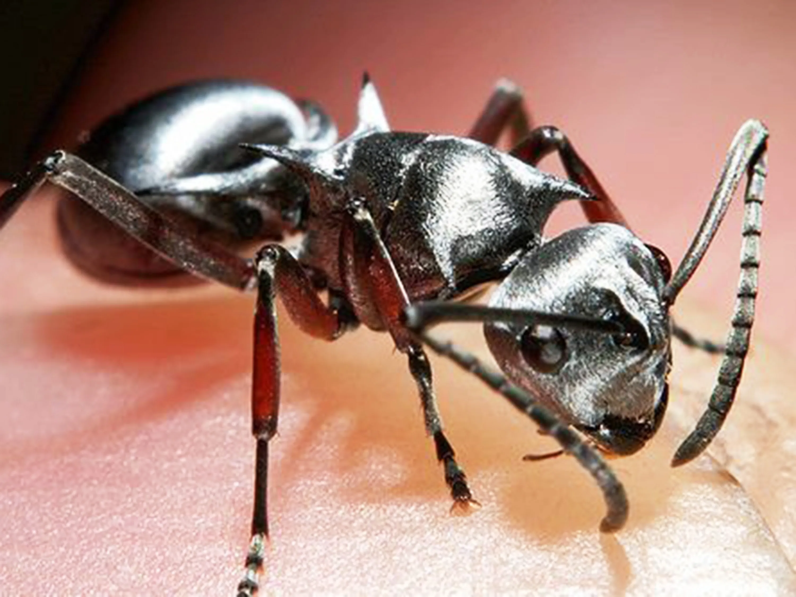

O primeiro Homem-Formiga foi criado por Stan Lee, Jack Kirby e Larry Lieber. Ele fez sua estreia em 1962, nas páginas de Tales of Astonish #27. Hank Pym era um cientista que inventou a Partícula Pym, capaz de fazê-lo mudar de tamanho. Além disso, Pym utilizava um capacete capaz de controlar formigas.
 ROUPA HOMEM FORMIGA
Como a roupa do Homem-Formiga funciona? Utilizando as partículas recém-descobertas, Pym desenvolveu um terno que poderia encolher um ser humano para o tamanho de uma formiga, mas manter sua força original e resiliência. Pym também desenvolveu o dispositivo de comunicação EMP, um dispositivo que lhe permitiu comunicar telepaticamente com formigas.
ROUPA HOMEM FORMIGA
Como a roupa do Homem-Formiga funciona? Utilizando as partículas recém-descobertas, Pym desenvolveu um terno que poderia encolher um ser humano para o tamanho de uma formiga, mas manter sua força original e resiliência. Pym também desenvolveu o dispositivo de comunicação EMP, um dispositivo que lhe permitiu comunicar telepaticamente com formigas.

Três grandes formigas
Para entender bem a origem do tal Homem-Formiga, é preciso investigar o doutor Hank Pym, desenvolvedor da tecnologia das partículas que lhe possibilitam transformar um uniforme em poderosa arma capaz de diminuir em tamanho e aumentar a força física de quem o veste. O polêmico cientista já causou bastante controvérsia dentro e fora dos quadrinhos, pois sua história gira em torno de temas delicados, como a bipolaridade, o vício em substâncias químicas e o abuso doméstico.
O próximo escolhido para usar a roupa ultra especial foi Scott Lang, que conhecemos bem do recente filme do MCU. Porém, nas revistas periódicas o traje também já foi obtido por Eric O’Grady, ex-agente da S.H.I.E.L.D. No entanto, ligeiramente diferente daqueles que costumam passar pela agência do rei Nick Fury, O’Grady possui uma índole duvidosa: ele conseguiu o protótipo do uniforme de Pym ao roubá-lo de um colega de trabalho que havia sido morto no campo.